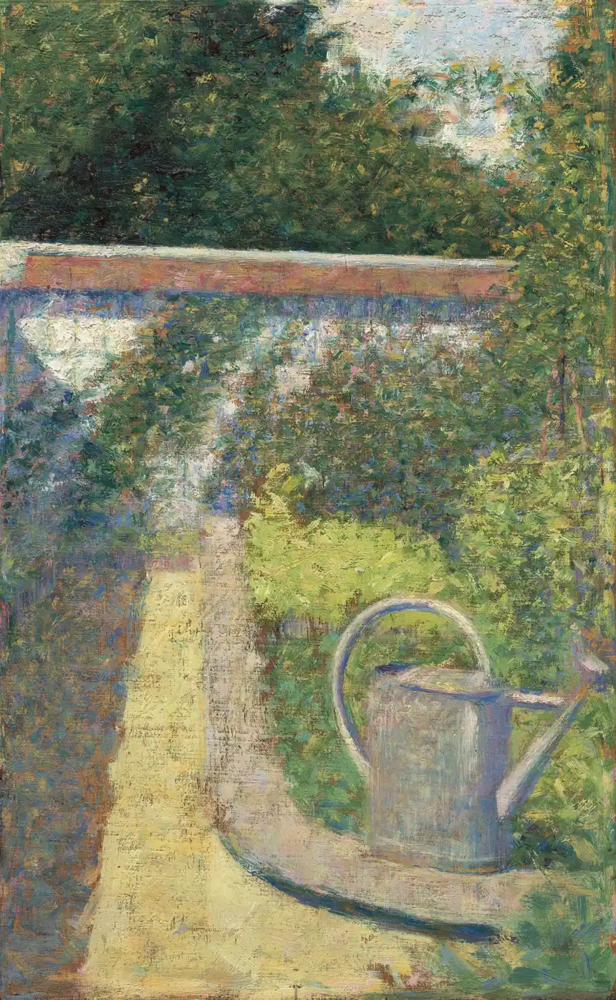

Plant Care Basics
The gentle fundamentals that make everything else easier: how to water well, read your soil, give plants the right light, prune without fear, and choose perennials that all but look after themselves.

Watering well
More plants are lost to careless watering than to almost anything else — and usually to too much rather than too little. The goal is simple: deep, infrequent soakings that send roots searching downward, rather than frequent sprinkles that keep them lazy at the surface.
- Water in the early morning, so leaves dry in the sun and little is lost to evaporation.
- Aim at the soil, not the leaves, and let the water sink in slowly.
- Give a good deep soak once or twice a week rather than a daily splash.
- Check before you water: push a finger an inch into the soil, and if it is damp, wait a day.
Tip: New plantings need more frequent water than established ones while their roots settle in — for the first few weeks, keep the soil evenly moist, then ease back to deep, occasional soakings.
Understanding your soil
Good gardening begins in the ground. Soil is not just dirt; it is a living thing, full of the structure and nourishment your plants depend on. You do not need a laboratory to understand yours — your hands will tell you most of what you need to know.
Scoop up a handful of moist soil and squeeze it. If it stays in a sticky ball, you have clay, which holds water and nutrients well but can grow waterlogged and heavy. If it falls apart like sugar, you have sand, which drains fast but dries out and loses nourishment quickly. If it holds together softly and then crumbles, you have loam — the gardener's ideal, and what most of us are working toward.
The happy news is that the cure for almost any soil is the same: compost. Spread a few inches of well-rotted compost or leaf mold over your beds each year and work it in gently. It opens up clay, binds sand, and feeds the whole living web beneath your feet. Few things reward a garden so richly for so little effort.
Tip: For a true reading of your soil's acidity and nutrients, your local Cooperative Extension office offers inexpensive soil tests and will explain the results in plain terms. It is well worth doing once.
Giving plants the right light
Every plant has a preference for light, and matching the plant to the spot is half the secret of a thriving garden. The labels use a simple shorthand worth learning:
- Full sun means six or more hours of direct sunlight a day — right for most vegetables, roses, and sun-loving flowers.
- Part sun or part shade means roughly three to six hours, often best in the gentler morning light.
- Full shade means less than three hours of direct sun, suited to ferns, hostas, and woodland plants.
Spend a day noticing how the sun travels across your garden. A spot that is bright at breakfast may be shaded by afternoon, and knowing these patterns lets you place each plant where it will be happiest. A sun-lover in the shade will sulk and stretch; a shade-lover in full sun will scorch. Put each in its right place and both will flourish with almost no further fuss.
Pruning without fear
Many gardeners are nervous of pruning, afraid of doing harm. In truth, most plants are wonderfully forgiving, and a thoughtful trim does far more good than harm. Pruning removes the dead and the diseased, shapes a plant, and encourages fresh, healthy growth.
What you'll need
- A clean, sharp pair of secateurs (hand pruners)
- A larger lopper for thicker stems
- Gloves, especially for roses and thorny shrubs
- Start by removing anything dead, damaged, or diseased — the “three Ds.” This alone improves most plants.
- Cut just above a healthy bud or leaf node, at a slight angle away from the bud.
- Stand back often to check the shape as you go; it is easy to take more, hard to put it back.
- Clean your blades with a wipe of rubbing alcohol between plants to avoid spreading disease.
Tip: Timing matters: as a gentle rule, prune spring-flowering shrubs right after they bloom, and summer-flowering ones in late winter. When in doubt, a light trim in late winter suits most plants.
Easy perennials to love
Perennials are the gift that keeps giving: plant them once and they return year after year, growing stronger as they settle in. They are the backbone of a cottage garden, and a handful of reliable ones will give you years of color for very little work.
Among the most forgiving are daylilies, which bloom cheerfully in almost any soil; coneflowers (echinacea), which stand up to heat and drought and feed the bees; black-eyed Susans, which pour out golden color from summer into fall; hostas, which bring lush leaves to shady corners; and sedum, which asks for almost nothing and rewards you anyway. Plant a few of these and you will have a garden that largely looks after itself.
Every few years, when a clump grows crowded and bare in the middle, lift it in spring or fall, split it into pieces with a spade, and replant. You will rejuvenate the plant and gain new ones for free — a small, satisfying magic that is at the heart of cottage gardening.
A word on houseplants
The garden need not stop at the back door. A few houseplants bring life and green to a room, clean the air a little, and give a gardener something to tend through the winter months. As with the garden, the commonest mistake indoors is overwatering.

- Choose forgiving plants to start: pothos, snake plant, and spider plant thrive on a little neglect.
- Water only when the top inch of soil is dry, and never let a pot sit in a saucer of water.
- Give each plant the light its label asks for; most like bright, indirect light near a window.
- Wipe dust from the leaves now and then so they can breathe and gather light.
Feeding your plants
Plants make most of their own food from sunlight, but the soil they draw their minerals from gets steadily used up, and a little feeding keeps a garden generous. The gentlest and best way to feed is the way nature does: with compost. A yearly topdressing of well-rotted compost, spread an inch or two deep around your plants in spring, slowly releases everything most plants need and improves the soil at the same time. For most cottage gardeners, this alone is enough.
If you do use a packaged fertilizer, less is more. Too much feed produces soft, sappy growth that pests love and that flops in the first wind, and it can burn roots outright. Always follow the rate on the label exactly — more is never better — and water it in well. A balanced, slow-release fertilizer applied once in spring suits most flower beds; heavy feeders like tomatoes appreciate a little more through the season. When in doubt, feed the soil with compost rather than force the plant with chemicals, and your garden will be healthier for it.
Tip: The numbers on a fertilizer bag — such as 10-10-10 — show the proportion of nitrogen, phosphorus, and potassium. For general use, a balanced blend where the three numbers are equal is a safe, simple choice.
Dealing with pests, gently
A few nibbled leaves are part of a living garden, and the healthiest gardens are rarely the ones sprayed most. Before reaching for anything, remember that a strong, well-watered plant in the right spot shrugs off most trouble, and that many “pests” are kept in check by the birds, ladybugs, and other helpers your garden attracts when you garden kindly.
When a pest does take hold, start with the gentlest remedy. Many aphids can be knocked off with a sharp spray of water or wiped away by hand. Slugs can be trapped or picked off in the cool of the evening. A barrier of netting keeps many insects and hungry rabbits at bay. These simple, chemical-free measures solve most problems without harming the bees and butterflies you want to keep.
Safety first: If you ever do use a pesticide, read and follow the entire label — it is both the law and the safest guidance there is. Use the smallest effective amount, keep it away from flowers the bees are visiting, and store it safely from children and pets. Your local Cooperative Extension office can identify a pest for you and recommend the least-harmful control, which is always the wisest first call.
None of this needs to be learned all at once, and nobody masters it in a single season — the best gardeners are simply those who have made the most mistakes and kept going. Be patient with yourself, expect to lose a plant or two along the way, and treat every failure as a lesson rather than a verdict. With these gentle fundamentals — water, soil, light, feeding, a fearless trim, and a kind hand with pests — you have everything you need to grow a garden you will love. When you are ready to know what each month calls for, the Garden Calendar is your friendly guide, and the Lawn Care guide tends the green around it all.